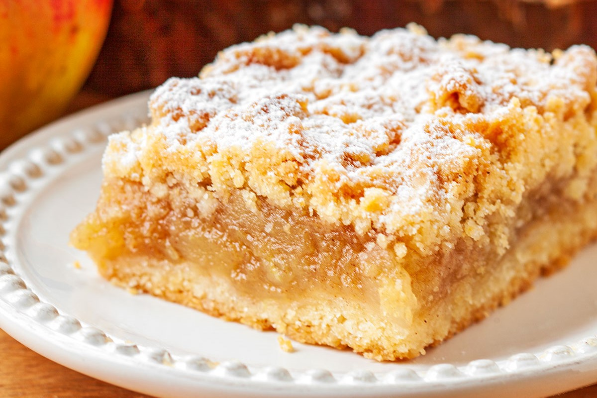

Składniki na 1 porcję
- 100 g jabłek
- 50 g mąki
- 25 g masła
- 10 g cukru
- Szczypta cynamonu
Przygotowanie
- Obierz jabłka, usuń gniazda nasienne i pokrój je w cienkie plasterki.
- Wymieszaj mąkę, masło i cukier, aby stworzyć kruche ciasto.
- Wyłóż ciasto na spód foremki, dodaj jabłka i posyp cynamonem.
- Piec w piekarniku rozgrzanym do 180°C przez około 45 minut.
- Podawaj lekko schłodzone, opcjonalnie z bitą śmietaną.